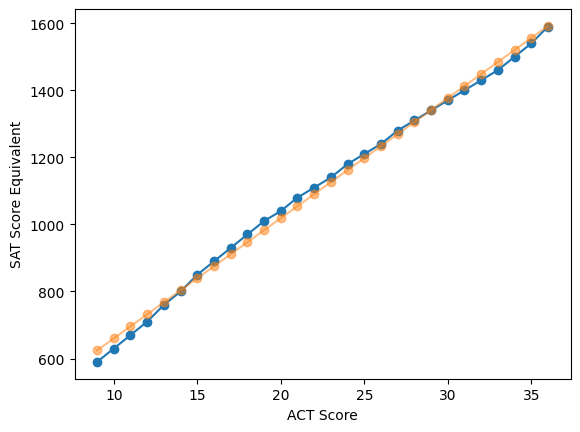
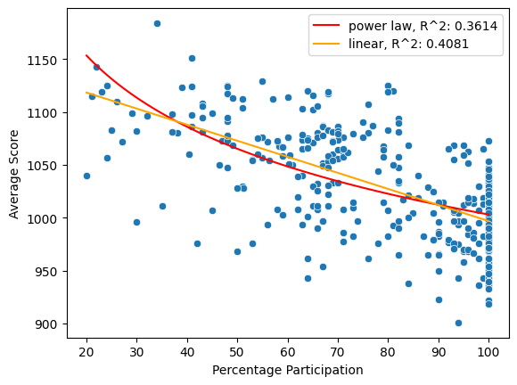
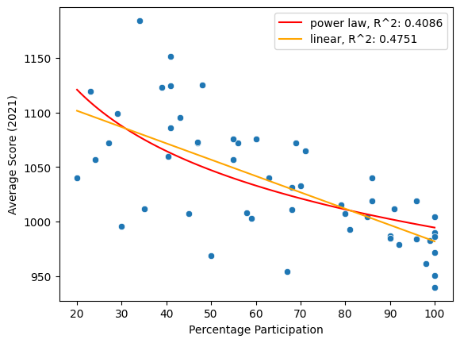
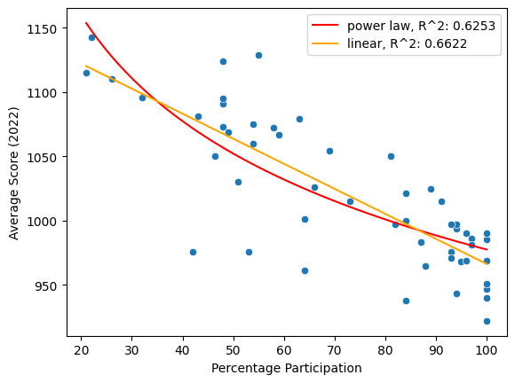
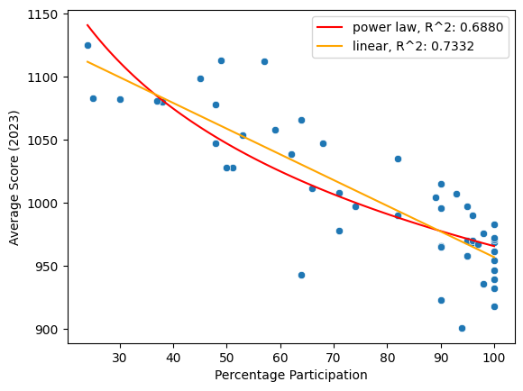

import scipy
import pandas as pd
import numpy as np
import seaborn as sns
import matplotlib.pyplot as plt
import sys
sys.path.insert(1, "../")
import utils.scores as scores
import utils.anomaly as anomaly
import utils.us_mapstates = utils.us_map.main("../data/cb_2018_us_state_500k")
act_sat_conv = pd.read_excel("../data/act_sat_conversion.xlsx", skiprows=1)plt.plot(act_sat_conv.ACT, act_sat_conv.SAT, marker="o")
act_sat_reg = scipy.stats.linregress(act_sat_conv.ACT, act_sat_conv.SAT)
reg_values = anomaly.linear(
act_sat_conv.ACT, act_sat_reg.slope, act_sat_reg.intercept)
plt.plot(act_sat_conv.ACT, reg_values, marker="o", alpha=0.5)
plt.ylabel("SAT Score Equivalent")
plt.xlabel("ACT Score")Text(0.5, 0, 'ACT Score')
s1 = scores.SATScores("../data/sat/tabn226.40_17_18_19_20.xlsx")
s2 = scores.SATScores("../data/sat/tabn226.40_18_21_22_23.xlsx")
s2.df = s2.df.query("year!=2018")paths = ['../data/act/tabn226.60_2013_2017.xlsx',
'../data/act/tabn226.60_2014_2018.xlsx',
'../data/act/tabn226.60_2015_2019.xlsx',
'../data/act/tabn226.60_2016_2020.xlsx',
'../data/act/tabn226.60_2017_2021.xlsx',
'../data/act/tabn226.60_2018_2022.xlsx',
'../data/act/tabn226.60_2018_2023.xlsx']
objs = [scores.ACTScores(path) for path in paths]
objs[0].df = objs[0].df.query("year==2013")
objs[1].df = objs[1].df.query("year==2014")test_scores = scores.Scores()
for score in [s1, s2] + objs:
test_scores = test_scores.merge(score)
test_scores.df| location | year | percent | section | mean | test | |
|---|---|---|---|---|---|---|
| 0 | United States | 2017 | 47.605306 | total | 1060.0 | SAT |
| 1 | Alabama | 2017 | 5.000000 | total | 1165.0 | SAT |
| 2 | Alaska | 2017 | 38.000000 | total | 1080.0 | SAT |
| 3 | Arizona | 2017 | 30.000000 | total | 1116.0 | SAT |
| 4 | Arkansas | 2017 | 3.000000 | total | 1208.0 | SAT |
| ... | ... | ... | ... | ... | ... | ... |
| 515 | Virginia | 2023 | 8.000000 | science | 24.3 | ACT |
| 516 | Washington | 2023 | 6.000000 | science | 24.2 | ACT |
| 517 | West Virginia | 2023 | 26.000000 | science | 20.1 | ACT |
| 518 | Wisconsin | 2023 | 95.000000 | science | 19.8 | ACT |
| 519 | Wyoming | 2023 | 100.000000 | science | 19.3 | ACT |
4212 rows × 6 columns
act_scores = test_scores.get_section("composite").df
act_scores_conv_df = act_scores.assign(SAT_equiv=anomaly.linear(
act_scores["mean"], act_sat_reg.slope, act_sat_reg.intercept))sat_scores = test_scores.get_section("total").df
combined_scores = (sat_scores.merge(act_scores_conv_df, on=["location", "year"])
.rename({"percent_x": "SAT_percent",
"mean_x": "SAT_mean",
"percent_y": "ACT_percent"}, axis=1))
combined_scores| location | year | SAT_percent | section_x | SAT_mean | test_x | ACT_percent | section_y | mean_y | test_y | SAT_equiv | |
|---|---|---|---|---|---|---|---|---|---|---|---|
| 0 | United States | 2017 | 47.605306 | total | 1060.0 | SAT | 56.334392 | composite | 21.0 | ACT | 1054.466338 |
| 1 | Alabama | 2017 | 5.000000 | total | 1165.0 | SAT | 100.000000 | composite | 19.2 | ACT | 989.968801 |
| 2 | Alaska | 2017 | 38.000000 | total | 1080.0 | SAT | 65.000000 | composite | 19.8 | ACT | 1011.467980 |
| 3 | Arizona | 2017 | 30.000000 | total | 1116.0 | SAT | 62.000000 | composite | 19.7 | ACT | 1007.884784 |
| 4 | Arkansas | 2017 | 3.000000 | total | 1208.0 | SAT | 100.000000 | composite | 19.4 | ACT | 997.135194 |
| ... | ... | ... | ... | ... | ... | ... | ... | ... | ... | ... | ... |
| 411 | Virginia | 2023 | 49.000000 | total | 1113.0 | SAT | 8.000000 | composite | 24.6 | ACT | 1183.461412 |
| 412 | Washington | 2023 | 37.000000 | total | 1081.0 | SAT | 6.000000 | composite | 24.5 | ACT | 1179.878216 |
| 413 | West Virginia | 2023 | 90.000000 | total | 923.0 | SAT | 26.000000 | composite | 20.3 | ACT | 1029.383963 |
| 414 | Wisconsin | 2023 | 2.000000 | total | 1236.0 | SAT | 95.000000 | composite | 19.4 | ACT | 997.135194 |
| 415 | Wyoming | 2023 | 1.000000 | total | 1200.0 | SAT | 100.000000 | composite | 19.0 | ACT | 982.802408 |
416 rows × 11 columns
majority_mean = np.where(combined_scores["ACT_percent"] > combined_scores["SAT_percent"],
combined_scores["SAT_equiv"],
combined_scores["SAT_mean"])
majority_percent = np.where(combined_scores["ACT_percent"] > combined_scores["SAT_percent"],
combined_scores["ACT_percent"],
combined_scores["SAT_percent"])
combined_scores = (combined_scores.assign(mean=majority_mean)
.assign(percent=majority_percent))
combined_scores.head()| location | year | SAT_percent | section_x | SAT_mean | test_x | ACT_percent | section_y | mean_y | test_y | SAT_equiv | mean | percent | |
|---|---|---|---|---|---|---|---|---|---|---|---|---|---|
| 0 | United States | 2017 | 47.605306 | total | 1060.0 | SAT | 56.334392 | composite | 21.0 | ACT | 1054.466338 | 1054.466338 | 56.334392 |
| 1 | Alabama | 2017 | 5.000000 | total | 1165.0 | SAT | 100.000000 | composite | 19.2 | ACT | 989.968801 | 989.968801 | 100.000000 |
| 2 | Alaska | 2017 | 38.000000 | total | 1080.0 | SAT | 65.000000 | composite | 19.8 | ACT | 1011.467980 | 1011.467980 | 65.000000 |
| 3 | Arizona | 2017 | 30.000000 | total | 1116.0 | SAT | 62.000000 | composite | 19.7 | ACT | 1007.884784 | 1007.884784 | 62.000000 |
| 4 | Arkansas | 2017 | 3.000000 | total | 1208.0 | SAT | 100.000000 | composite | 19.4 | ACT | 997.135194 | 997.135194 | 100.000000 |
demonstration_locals = ["Nebraska",
"Massachusetts", "United States", "Florida"]
sns.lineplot(data=combined_scores.query("location in @demonstration_locals"),
x="year",
y="mean",
hue="location",
marker="o")
states.merge(combined_scores, left_on="NAME", right_on="location")\
.plot(column="mean",
legend=True,
cmap="inferno",
edgecolor="black",
figsize=(8, 8),
lw=0.5,
legend_kwds={"label": "Mean SAT or ACT converted Score",
"shrink": 0.5})
plt.axis("Off")
plt.show()
rankings = combined_scores.pivot_table(
index="location", columns="year", values="mean").sort_values(2023, ascending=False).reset_index()
rankings.columns.name = "2023 Rankings"
rankings.index = rankings.index + 1
rankings.round(1)| 2023 Rankings | location | 2017 | 2018 | 2019 | 2020 | 2021 | 2022 | 2023 |
|---|---|---|---|---|---|---|---|---|
| 1 | Oregon | 1108.0 | 1117.0 | 1112.0 | 1104.0 | 1040.1 | 1143.0 | 1125.0 |
| 2 | Virginia | 1102.0 | 1117.0 | 1119.0 | 1116.0 | 1151.0 | 1124.0 | 1113.0 |
| 3 | Massachusetts | 1107.0 | 1125.0 | 1120.0 | 1119.0 | 1184.0 | 1129.0 | 1112.0 |
| 4 | Vermont | 1114.0 | 1120.0 | 1106.0 | 1103.0 | 1124.0 | 1095.0 | 1099.0 |
| 5 | California | 1055.0 | 1076.0 | 1065.0 | 1049.0 | 1057.0 | 1115.0 | 1083.0 |
| 6 | Alaska | 1011.5 | 1106.0 | 1097.0 | 1098.0 | 1119.0 | 1110.0 | 1082.0 |
| 7 | Washington | 1075.0 | 1081.0 | 1074.0 | 1073.0 | 1072.0 | 1096.0 | 1081.0 |
| 8 | Maine | 1012.0 | 1013.0 | 1013.0 | 995.0 | 1099.0 | 1081.0 | 1080.0 |
| 9 | Pennsylvania | 1071.0 | 1086.0 | 1082.0 | 1078.0 | 1123.0 | 1091.0 | 1078.0 |
| 10 | New Jersey | 1056.0 | 1094.0 | 1090.0 | 1081.0 | 1125.0 | 1079.0 | 1066.0 |
| 11 | South Dakota | 1083.1 | 1086.7 | 1076.0 | 1079.5 | 1076.0 | 1072.4 | 1058.0 |
| 12 | Georgia | 1050.0 | 1064.0 | 1058.0 | 1053.0 | 1086.0 | 1060.0 | 1054.0 |
| 13 | Iowa | 1086.7 | 1083.1 | 1076.0 | 1058.0 | 1072.4 | 1068.8 | 1047.3 |
| 14 | Minnesota | 1072.4 | 1065.2 | 1068.8 | 1065.2 | 1076.0 | 1054.5 | 1047.3 |
| 15 | New York | 1052.0 | 1068.0 | 1064.0 | 1058.0 | 1057.0 | 1067.0 | 1039.0 |
| 16 | New Hampshire | 1052.0 | 1063.0 | 1059.0 | 1055.0 | 1065.0 | 1050.0 | 1035.0 |
| 17 | South Carolina | 972.1 | 957.7 | 975.6 | 961.3 | 968.5 | 1030.0 | 1028.0 |
| 18 | United States | 1054.5 | 1068.0 | 1059.0 | 1051.0 | 1060.0 | 1050.0 | 1028.0 |
| 19 | Utah | 1029.4 | 1033.0 | 1029.4 | 1025.8 | 1040.1 | 1015.1 | 1015.1 |
| 20 | Missouri | 1033.0 | 1018.6 | 1047.3 | 1043.7 | 1040.1 | 1025.8 | 1011.5 |
| 21 | Maryland | 1060.0 | 1080.0 | 1058.0 | 1029.0 | 1073.0 | 1075.0 | 1008.0 |
| 22 | Connecticut | 1041.0 | 1053.0 | 1046.0 | 1039.0 | 1072.0 | 1025.0 | 1007.0 |
| 23 | North Dakota | 1029.4 | 1029.4 | 1015.1 | 1004.3 | 1004.3 | 990.0 | 1004.3 |
| 24 | Kansas | 1079.5 | 1076.0 | 1061.6 | 1033.0 | 1015.1 | 1015.1 | 997.1 |
| 25 | Wisconsin | 1036.6 | 1036.6 | 1029.4 | 1022.2 | 1018.6 | 997.1 | 997.1 |
| 26 | Colorado | 1047.3 | 1025.0 | 1024.0 | 1012.0 | 1072.0 | 1021.0 | 996.0 |
| 27 | Ohio | 1090.3 | 1029.4 | 1018.6 | 1015.1 | 1004.3 | 997.1 | 990.0 |
| 28 | Nebraska | 1068.8 | 1022.2 | 1018.6 | 1015.1 | 1018.6 | 997.1 | 990.0 |
| 29 | Wyoming | 1025.8 | 1018.6 | 1011.5 | 1007.9 | 1011.5 | 990.0 | 982.8 |
| 30 | Texas | 1020.0 | 1032.0 | 1022.0 | 1010.0 | 1003.0 | 1001.0 | 978.0 |
| 31 | Montana | 1029.4 | 1018.6 | 1011.5 | 1015.1 | 1033.0 | 993.6 | 975.6 |
| 32 | Kentucky | 1018.6 | 1025.8 | 1011.5 | 1000.7 | 990.0 | 968.5 | 972.1 |
| 33 | Indiana | 1074.0 | 1086.0 | 1080.0 | 1074.0 | 1095.0 | 1073.0 | 971.0 |
| 34 | Illinois | 1068.8 | 1019.0 | 1013.0 | 1007.0 | 1007.0 | 981.0 | 970.0 |
| 35 | Idaho | 1005.0 | 1001.0 | 993.0 | 984.0 | 985.0 | 986.0 | 970.0 |
| 36 | District of Columbia | 950.0 | 977.0 | 975.0 | 979.0 | 987.0 | 985.0 | 969.0 |
| 37 | Arkansas | 997.1 | 997.1 | 993.6 | 982.8 | 982.8 | 975.6 | 968.5 |
| 38 | Michigan | 1005.0 | 1011.0 | 1003.0 | 998.0 | 1031.0 | 1000.0 | 967.0 |
| 39 | Florida | 1017.0 | 1014.0 | 999.0 | 992.0 | 993.0 | 983.0 | 966.0 |
| 40 | North Carolina | 986.4 | 986.4 | 982.8 | 975.6 | 979.2 | 964.9 | 964.9 |
| 41 | Tennessee | 1011.5 | 1004.3 | 997.1 | 993.6 | 986.4 | 968.5 | 961.3 |
| 42 | Delaware | 996.0 | 998.0 | 985.0 | 978.0 | 984.0 | 968.0 | 958.0 |
| 43 | Rhode Island | 1062.0 | 1018.0 | 995.0 | 990.0 | 1011.0 | 971.0 | 958.0 |
| 44 | Louisiana | 1000.7 | 990.0 | 975.6 | 972.1 | 961.3 | 950.6 | 954.1 |
| 45 | Alabama | 990.0 | 986.4 | 979.2 | 975.6 | 972.1 | 947.0 | 947.0 |
| 46 | Hawaii | 982.8 | 979.2 | 982.8 | 964.9 | 954.1 | 975.6 | 943.4 |
| 47 | Oklahoma | 997.1 | 993.6 | 979.2 | 972.1 | 1007.9 | 943.4 | 939.8 |
| 48 | Arizona | 1007.9 | 990.0 | 982.8 | 986.4 | 1011.5 | 961.3 | 936.2 |
| 49 | Mississippi | 968.5 | 968.5 | 961.3 | 954.1 | 950.6 | 939.8 | 932.6 |
| 50 | West Virginia | 1033.0 | 1029.4 | 943.0 | 936.0 | 1007.0 | 938.0 | 923.0 |
| 51 | Nevada | 939.8 | 936.2 | 943.4 | 943.4 | 939.8 | 921.9 | 918.3 |
| 52 | New Mexico | 1007.9 | 997.1 | 993.6 | 993.6 | 996.0 | 976.0 | 901.0 |
combined_scores.query("location == 'North Dakota'")| location | year | SAT_percent | section_x | SAT_mean | test_x | ACT_percent | section_y | mean_y | test_y | SAT_equiv | mean | percent | |
|---|---|---|---|---|---|---|---|---|---|---|---|---|---|
| 35 | North Dakota | 2017 | 2.0 | total | 1256.0 | SAT | 98.0 | composite | 20.3 | ACT | 1029.383963 | 1029.383963 | 98.0 |
| 122 | North Dakota | 2018 | 2.0 | total | 1283.0 | SAT | 98.0 | composite | 20.3 | ACT | 1029.383963 | 1029.383963 | 98.0 |
| 123 | North Dakota | 2018 | 2.0 | total | 1283.0 | SAT | 98.0 | composite | 20.3 | ACT | 1029.383963 | 1029.383963 | 98.0 |
| 191 | North Dakota | 2019 | 2.0 | total | 1263.0 | SAT | 96.0 | composite | 19.9 | ACT | 1015.051177 | 1015.051177 | 96.0 |
| 243 | North Dakota | 2020 | 2.0 | total | 1231.0 | SAT | 94.0 | composite | 19.6 | ACT | 1004.301587 | 1004.301587 | 94.0 |
| 295 | North Dakota | 2021 | 1.0 | total | 1258.0 | SAT | 100.0 | composite | 19.6 | ACT | 1004.301587 | 1004.301587 | 100.0 |
| 347 | North Dakota | 2022 | 1.0 | total | 1212.0 | SAT | 96.0 | composite | 19.2 | ACT | 989.968801 | 989.968801 | 96.0 |
| 399 | North Dakota | 2023 | 1.0 | total | 1287.0 | SAT | 89.0 | composite | 19.6 | ACT | 1004.301587 | 1004.301587 | 89.0 |
anomaly.anomaly(combined_scores, separate_years=False)
combined_corrected_scores = anomaly.anomaly(
combined_scores, separate_years=True, suppress=True)
combined_corrected_scores = combined_corrected_scores.assign(
anom_c=combined_corrected_scores["mean"]-combined_corrected_scores["lin_pred"])
sns.lineplot(data=combined_corrected_scores.query("location in @demonstration_locals"),
x="year",
y="anom_c",
marker="o",
hue="location")
rankings = combined_corrected_scores.pivot_table(
index="location", columns="year", values="anom_c").sort_values(2023, ascending=False).reset_index()
rankings.columns.name = "2023 Rankings"
rankings.index = rankings.index + 1
rankings.round(1)| 2023 Rankings | location | 2017 | 2018 | 2019 | 2020 | 2021 | 2022 | 2023 |
|---|---|---|---|---|---|---|---|---|
| 1 | Massachusetts | 61.7 | 77.9 | 81.8 | 86.5 | 103.4 | 75.0 | 67.4 |
| 2 | Virginia | 41.5 | 48.2 | 56.4 | 56.1 | 80.9 | 56.4 | 52.1 |
| 3 | New Hampshire | 34.3 | 44.8 | 47.0 | 46.3 | 39.7 | 46.7 | 41.3 |
| 4 | Utah | 17.2 | 22.0 | 26.7 | 30.0 | 37.3 | 31.2 | 37.7 |
| 5 | Connecticut | 28.8 | 42.0 | 43.3 | 43.2 | 43.7 | 37.3 | 35.7 |
| 6 | New Jersey | 2.4 | 50.5 | 53.6 | 52.2 | 65.4 | 40.6 | 35.6 |
| 7 | Vermont | 46.6 | 44.0 | 39.7 | 39.4 | 53.9 | 27.4 | 29.9 |
| 8 | Wisconsin | 24.3 | 25.6 | 26.7 | 26.4 | 30.7 | 17.2 | 29.9 |
| 9 | Wyoming | 13.6 | 7.7 | 8.8 | 12.0 | 16.1 | 23.7 | 25.8 |
| 10 | Minnesota | 60.2 | 52.4 | 56.8 | 54.7 | 34.3 | 27.8 | 25.1 |
| 11 | North Dakota | 14.4 | 14.8 | 4.9 | -2.5 | 22.3 | 15.9 | 24.9 |
| 12 | Nebraska | 34.5 | 11.3 | 16.0 | 19.2 | 15.8 | 19.2 | 24.8 |
| 13 | Colorado | 35.1 | 14.0 | 21.3 | 16.2 | 24.3 | 23.5 | 18.6 |
| 14 | South Dakota | 43.3 | 34.2 | 26.5 | 28.8 | 26.8 | 24.3 | 17.5 |
| 15 | Pennsylvania | 10.5 | 20.8 | 23.2 | 21.7 | 49.9 | 23.4 | 15.0 |
| 16 | Kentucky | 6.4 | 14.8 | 8.8 | 4.9 | 8.0 | -5.6 | 15.0 |
| 17 | Montana | 17.2 | 7.7 | 8.8 | 19.2 | 6.2 | 15.6 | 14.5 |
| 18 | Indiana | 10.7 | 15.4 | 13.7 | 12.2 | 27.9 | 5.4 | 14.0 |
| 19 | Oregon | 17.2 | 12.0 | 17.6 | 18.5 | -61.3 | 24.7 | 13.2 |
| 20 | District of Columbia | -76.0 | -48.4 | -38.9 | -16.8 | -9.9 | 18.7 | 12.0 |
| 21 | Illinois | 46.9 | 6.2 | 10.3 | 7.5 | -4.8 | 8.9 | 4.8 |
| 22 | New York | -5.7 | 19.1 | 22.0 | 23.7 | 7.8 | 20.8 | 4.6 |
| 23 | Tennessee | -0.8 | -6.7 | -5.5 | -2.3 | 4.4 | 2.2 | 4.3 |
| 24 | Michigan | -7.2 | 0.0 | 0.3 | 2.2 | 1.2 | 2.5 | 3.9 |
| 25 | Arkansas | -15.1 | -13.8 | -9.1 | -13.0 | -0.6 | -4.3 | 3.3 |
| 26 | Idaho | -16.9 | -10.0 | -9.7 | -11.8 | -11.9 | 13.9 | 2.8 |
| 27 | Georgia | -16.0 | -1.2 | 1.0 | -1.4 | 15.9 | 4.1 | 1.2 |
| 28 | Louisiana | -11.5 | -21.0 | -27.0 | -23.8 | -23.6 | -15.7 | -2.9 |
| 29 | Maine | -7.1 | 0.2 | 8.5 | -4.5 | 11.0 | 3.6 | -3.3 |
| 30 | Ohio | 43.6 | 18.4 | 16.0 | 19.2 | -0.1 | -4.2 | -3.7 |
| 31 | Washington | 13.1 | 14.0 | 15.2 | 20.4 | -19.0 | -2.8 | -4.4 |
| 32 | Maryland | 5.0 | 25.7 | 21.6 | 11.2 | 11.9 | 19.1 | -8.1 |
| 33 | Rhode Island | 9.8 | 1.6 | -7.7 | -5.8 | -18.8 | -8.9 | -9.2 |
| 34 | Delaware | -16.2 | -13.0 | -17.7 | -17.8 | -3.9 | -8.0 | -9.2 |
| 35 | Alabama | -22.3 | -24.6 | -23.4 | -20.2 | -9.9 | -19.3 | -10.1 |
| 36 | Florida | -18.7 | -2.4 | -3.7 | -3.8 | -17.3 | -8.6 | -11.4 |
| 37 | North Carolina | -25.8 | -24.6 | -19.9 | -20.2 | -14.7 | -24.8 | -12.5 |
| 38 | Kansas | 30.1 | 12.6 | 6.5 | 4.2 | 1.7 | -3.8 | -12.9 |
| 39 | Missouri | 20.7 | 7.7 | 10.9 | 7.6 | 2.9 | -6.7 | -14.8 |
| 40 | Iowa | 29.0 | 14.3 | 9.6 | 3.6 | 11.2 | 3.1 | -15.7 |
| 41 | Oklahoma | -15.1 | -17.4 | -23.4 | -23.8 | -36.8 | -34.6 | -17.2 |
| 42 | Alaska | -49.0 | -8.0 | -16.1 | -13.2 | 22.0 | -0.5 | -17.6 |
| 43 | Mississippi | -43.8 | -42.5 | -41.4 | -41.7 | -31.4 | -26.5 | -24.4 |
| 44 | Arizona | -56.8 | -82.5 | -70.4 | -62.6 | -67.6 | -75.1 | -24.9 |
| 45 | California | -22.1 | -7.3 | -6.9 | -7.3 | -38.5 | -5.2 | -26.8 |
| 46 | United States | -18.0 | -18.3 | -17.8 | -17.7 | -11.1 | -20.8 | -28.4 |
| 47 | South Carolina | -40.2 | -53.2 | -68.2 | -78.5 | -88.2 | -31.8 | -30.9 |
| 48 | Texas | -44.6 | -40.4 | -40.6 | -35.3 | -40.2 | -35.4 | -38.1 |
| 49 | Nevada | -72.4 | -74.7 | -59.3 | -52.5 | -42.1 | -44.4 | -38.7 |
| 50 | West Virginia | -22.0 | -44.8 | -61.5 | -63.5 | -57.1 | -59.5 | -54.4 |
| 51 | New Mexico | -51.2 | -73.5 | -78.4 | -82.8 | -90.5 | -103.3 | -68.2 |
| 52 | Hawaii | -43.2 | -51.6 | -57.3 | -63.9 | -77.1 | -82.2 | -87.0 |
anomaly.anomaly(combined_scores, separate_years=True)| location | year | SAT_percent | section_x | SAT_mean | test_x | ACT_percent | section_y | mean_y | test_y | SAT_equiv | mean | percent | lin_pred | plaw_pred | |
|---|---|---|---|---|---|---|---|---|---|---|---|---|---|---|---|
| 0 | United States | 2017 | 47.605306 | total | 1060.0 | SAT | 56.334392 | composite | 21.0 | ACT | 1054.466338 | 1054.466338 | 56.334392 | 1072.451745 | 1073.863725 |
| 1 | Alabama | 2017 | 5.000000 | total | 1165.0 | SAT | 100.000000 | composite | 19.2 | ACT | 989.968801 | 989.968801 | 100.000000 | 1012.231550 | 1013.888680 |
| 2 | Alaska | 2017 | 38.000000 | total | 1080.0 | SAT | 65.000000 | composite | 19.8 | ACT | 1011.467980 | 1011.467980 | 65.000000 | 1060.500816 | 1058.586028 |
| 3 | Arizona | 2017 | 30.000000 | total | 1116.0 | SAT | 62.000000 | composite | 19.7 | ACT | 1007.884784 | 1007.884784 | 62.000000 | 1064.638182 | 1063.607301 |
| 4 | Arkansas | 2017 | 3.000000 | total | 1208.0 | SAT | 100.000000 | composite | 19.4 | ACT | 997.135194 | 997.135194 | 100.000000 | 1012.231550 | 1013.888680 |
| ... | ... | ... | ... | ... | ... | ... | ... | ... | ... | ... | ... | ... | ... | ... | ... |
| 411 | Virginia | 2023 | 49.000000 | total | 1113.0 | SAT | 8.000000 | composite | 24.6 | ACT | 1183.461412 | 1113.000000 | 49.000000 | 1060.918986 | 1049.645199 |
| 412 | Washington | 2023 | 37.000000 | total | 1081.0 | SAT | 6.000000 | composite | 24.5 | ACT | 1179.878216 | 1081.000000 | 37.000000 | 1085.364376 | 1084.640963 |
| 413 | West Virginia | 2023 | 90.000000 | total | 923.0 | SAT | 26.000000 | composite | 20.3 | ACT | 1029.383963 | 923.000000 | 90.000000 | 977.397235 | 977.718254 |
| 414 | Wisconsin | 2023 | 2.000000 | total | 1236.0 | SAT | 95.000000 | composite | 19.4 | ACT | 997.135194 | 997.135194 | 95.000000 | 967.211656 | 971.565720 |
| 415 | Wyoming | 2023 | 1.000000 | total | 1200.0 | SAT | 100.000000 | composite | 19.0 | ACT | 982.802408 | 982.802408 | 100.000000 | 957.026076 | 965.764634 |
416 rows × 15 columns




